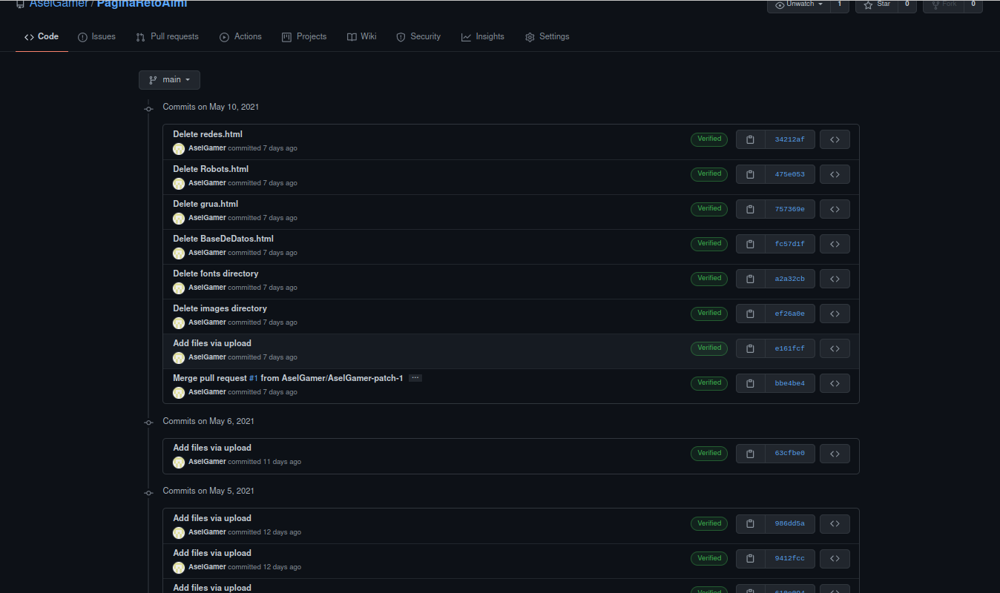
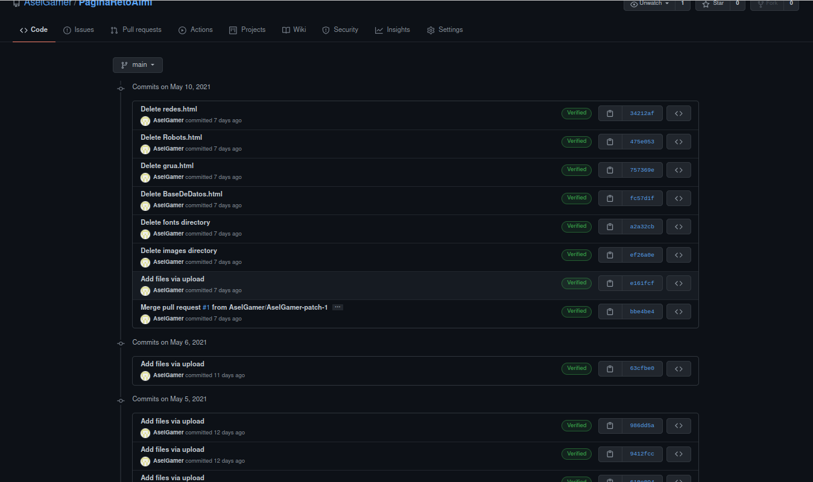

Webgunea sortzeko IDEa erabiltzea erabaki dugu Visual Code eta plataforma github bertsioak automatikoki ostatatzeko eta ordenatzeko. Ez hori bakarrik, webgunea malgutasuna eta moldagarritasuna kontuan hartuta diseinatzen ari gara, ebazpen guztietako erabiltzaileek sarbidea izan dezaten. Ez pozik horregatik orrialdea igo dugu host web, zerbitzari propio baten aldi berean.


Gure bertsioen kontrolerako, github erabiltzea erabaki dugu, errazena erabiltzeaz gain, bertsioak kontrolatu eta eskaerak automatikoki kontrolatzen dizkigulako. Oso ondo etortzen da eta segurtasun kopiak egitea, adar desberdinak egitea eta gure lana etxera eramatea konpromisorik gabe.
 
